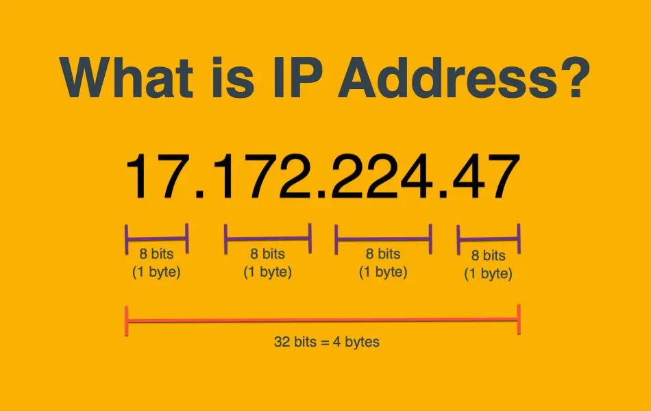
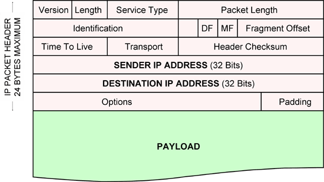
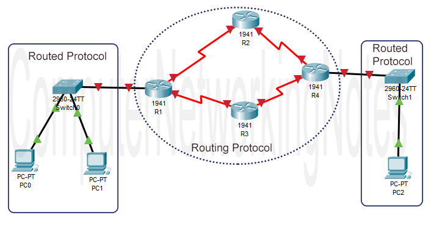
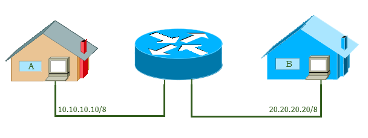

An IP address is a unique address that identifies a device on the internet or a local network. IP stands for "Internet Protocol," which is the set of rules governing the format of data sent via the internet or local network. In essence, IP addresses are the identifier that allows information to be sent between devices on a network: they contain location information and make devices accessible for communication. The internet needs a way to differentiate between different computers, routers, and websites. IP addresses provide a way of doing so and form an essential part of how the internet works.
An IP address is a string of numbers separated by periods. IP addresses are expressed as a set of four numbers — an example address might be 192.158.1.38. Each number in the set can range from 0 to 255. So, the full IP addressing range goes from 0.0.0.0 to 255.255.255.255. IP addresses are not random. They are mathematically produced and allocated by the Internet Assigned Numbers Authority (IANA), a division of the Internet Corporation for Assigned Names and Numbers (ICANN). ICANN is a non-profit organization that was established in the United States in 1998 to help maintain the security of the internet and allow it to be usable by all. Each time anyone registers a domain on the internet, they go through a domain name registrar, who pays a small fee to ICANN to register the domain.
In telecommunications and computer networking, a network packet is a formatted unit of data carried by a packet-switched network. A packet consists of control information and user data; the latter is also known as the payload.
A packet is a small amount of data sent over a network, such as a LAN or the Internet. Similar to a real-life package, each packet includes a source and destination as well as the content (or data) being transferred. When the packets reach their destination, they are reassembled into a single file or other contiguous block of data. While the exact structure of a packet varies between protocols, a typical packet includes two sections — a header and payload. Information about the packet is stored in the header. For example, an IPv6 header includes the following fields: Source address (128 bits) - IPv6 address of the packet origin Destination address (128 bits) - IPv6 address of the packet destination Version (4 bits) - "6" for IPv6 Traffic class (8 bits) - priority setting for the packet Flow label (20 bits) - optional ID that labels the packet as part of a specific flow; used to distinguish between multiple transmissions from a single origin Payload length (16 bits) - size of the data, defined in octets Next header (8 bits) - ID of the header following the current packet; may be TCP, UDP, or another protocol Hop limit (8 bits) - maximum number of network hops (between routers, switches, etc) before the packet is dropped; also known as "TTL" in IPv4
IP routing is the field of routing methodologies of Internet Protocol packets within and across IP networks. This involves not only protocols and technologies but includes the policies of the worldwide organization and configuration of Internet infrastructure.
IP routing is a process of transferring data from one network to another as IP packets. By default, hosts of different networks cannot communicate with each other. If two hosts located in different IP networks want to communicate with each other, they use IP routing. Routers provide IP routing. A router is a specialized device that connects different IP networks. Let’s take a simple example. Suppose two IP hosts; 10.10.10.10/8 and 20.20.20.20/8 want to communicate. Since they both belong to the different IP networks, they need a router to communicate. The following image shows this example.
